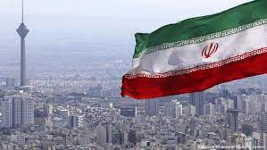

Home
Iran
What can you do ?
Iran is not really a torist atraction, many people would rather go other
places than go to a country in the middle east. In Iran they have cities
,so you can go shopping and visit the local towns.Here is a list of what
I would do in Iran,
- Visit the state capital (Tehran) this city is the 27th largest city
in the world.
- eat the local cuisine, Iran's food is centerd around lamb and rice
(two of my most favorite food in the world. They also have really good
spices including saffron.
